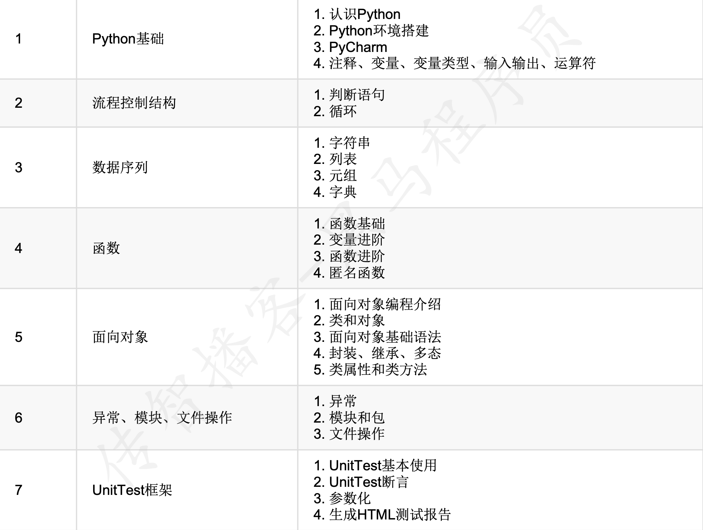
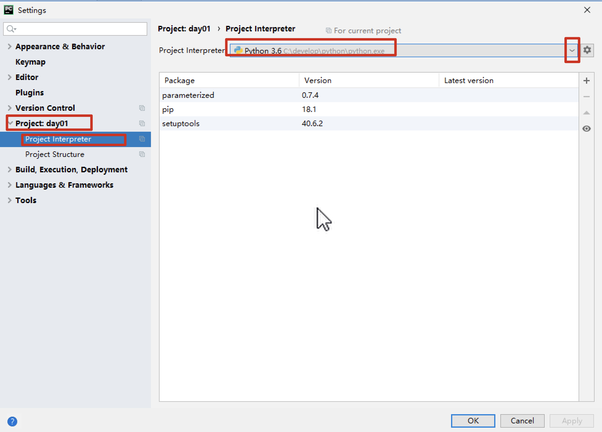

day01 课堂笔记
课程之前
课程介绍
x
目标: 1. 学习掌握 python 的基本语法2. 在代码中遇到常见的错误,自己能够动手解决问题Python 只是一个编程语言,在工作中需要结合其他的工具使用Python + selenium web 自动化(功能测试转换为代码)Python + appium 移动端(手机端 APP)自动化Python + requests 接口
今日内容
x
1. 了解Python语言及其应用领域 2. 了解Python运行原理3. 掌握如何安装Python解释器 4. 知道如何安装PyCharm5. 掌握如何在PyCharm中编写Python代码并运行 6. 掌握单行注释和多行注释的使用方式7. 掌握变量的使用8. 掌握常⻅的数据类型9. 熟悉常用的运算符
Python 介绍[了解]
xxxxxxxxxx作者: 吉多·范罗苏姆(Guido van Rossum) 龟叔1989 年开始书写, 1991年诞生问什么学习 Python?
- 简单, 易学, 免费, 开源, 适用人群广泛
- 应用领域广泛(自动化测试)
Python 的版本
- Python2 (2.x 2.7)
- Python3(主流使用的版本, 3.6 之后的版本(即大于等于 3.6))
语言的分类
xxxxxxxxxx计算机只认识 二进制(0 和 1).编程语言是人和计算机沟通的语言.编程语言分类: 编译型语言, 解释型语言Python 环境配置
x
python 解释器(必须有): 将我们书写的 Python 代码转换为二进制, 建议 版本 >= 3.6pycharm(选装): 是 Python 中最好用的IDE(集成开发环境)之一, 是用来书写代码运行代码,调试代码的... vscode, idle , 记事本 ...Python 解释器的安装
- 双击安装包
- 选择 安装方式(可以默认安装, 可以自定义), 不要忘了 勾选
添加path环境变量
xxxxxxxxxxpath 环境变量: 将一个软件或者程序添加到 path 环境变量之后, 就可以使用终端(cmd) 在任意路径下使用 这个软件(如果没有环境变量,只能在安装目录使用)Python 安装之后, 在桌面中没有快捷方式,也不需要, 是在 pycharm 中使用或者在cmd 中使用pycharm 的配置安装
x
pycharm 有两个版本, 一个是专业版(收费的), 一个社区版(免费使用)直接双击安装即可, 看见一下界面即可

路径的选择(建议)
x
1. 可以直接使用默认的路径2. 自定义路径2.1 不建议使用中文2.2 可以在某个盘的根目录中创建一个目录 tools, 可以将所以学习阶段的环境都安装在 tools 目录2.3 Python 安装, tools 目录中创建 Python36 目录, pycharm 安装,创建 pycharm 的目录, 其他软件的安装,都创建一个目录3. 严禁安装之后,自己剪切移动目录
使用 pycharm 书写代码
x
pycharm 是书写代码的软件,还能运行代码, 运行代码的前提是在 pycharm 软件中配置了解释器.pycharm 组织代码的方式是 项目(project), 简单的理解为一个目录, 目录中可以放很多的代码建议: 每天的代码作为一个项目每次在创建项目的时候, 需要保证这个目录是一个空目录双击打开
pycharm软件创建新 项目

配置项目的路径和解释器

创建代码文件书写代码
xxxxxxxxxx1. 将来在工作中, 代码的文件名字不要使用中文,但目前学习阶段,我会使用中文2. Python 文件的后缀是 .py3. 代码要顶格书写4. 代码中的标点符号要使用英文状态的标点

运行代码文件

查看运行结果
pycharm 常见的设置
- 设置背景色
设置代码的字体和大小
右键菜单的使用
设置解释器


print 函数的简单使用
x
print("hello world!")print() 是 Python 中自带的函数,作用在控制台中输出 括号中的内容后续看到这个函数就是输出打印 数据的, 或者想要在控制台中显示某个内容,就要使用 print() 函数print() 主要在学习阶段使用, 便于我们确认结果的正确性在实际工作的代码中,基本不会使用 print,会使用 其他的内容代替(日志模块)print() 函数中是什么内容,就会显示什么内容, 里边的文字信息 可以使用单引号,也可以使用 双引号注释
xxxxxxxxxx1. 注释是对代码解释说明的文字, 不会执行, 可以增加代码的可读性2. Python 中的注释分为两种, 单行注释和多行注释单行注释
x
使用 井号空格进行注释(单独一个# 也可以)快捷键 Ctrl(cmd) /1. 可以选中多行,使用快捷键2. 如果代码已经添加注释, 再次使用快捷键,会取消注释多行注释
x
多行注释中的内容 可以换行书写多行注释可以使用 3 对 双引号或者 3 对 单引号 , 被三对引号包括的内容就是注释的内容三对引号的注释,一般写在文件的最开始部分,或者文档注释处(函数)
xxxxxxxxxx#这是单行注释,代码不会执行# 以井号空格开始的注释print('hello world')"""使用三对双引号包括起来的内容 ,也是注释,可以换行, 不会执行"""'''使用三对单引号包括起来的内容 ,也是注释,可以换行, 不会执行'''print('end')
Python 代码中三种波浪线和 PEP8
红色
xxxxxxxxxx红色波浪线是代码的错误, 必须处理,代码才能执行注意: 在后续课程中,某些代码没有写完,也会出现红色波浪线灰色
xxxxxxxxxx灰色波浪线, 不会影响代码的正常执行, 基本上所有的灰色波浪线都是 PEP8 造成的PEP8: 是 Python 代码的书写规范, 如果不按照这个规范书写,会给灰色波浪线提示,建议代码的书写按照 PEP8 的规范书写1. 可以书写代码的时候注意 PEP8 的代码规范2. 可以在书写完成之后,使用快捷键 Ctrl Alt L 来按照 PEP8 的规范自动格式化代码

绿色
xxxxxxxxxx绿色波浪线, 不影响代码的正常执行, 在引号中, 认为你书写的内容不是一个单词,就会给你绿色提示.
在 cmd 终端中运行 Python 代码
x
python 代码文件的名字

变量
xxxxxxxxxx变量作用: 是用来存储数据的(在程序代码中出现的数据,想要保存下来使用, 就必须使用变量), 如: 测试数据, 用户名, 密码, 验证码变量注意事项: 变量必须先定义(保存数据)后使用(取出数据).定义变量
x
变量名 = 数据值 # 可以理解为 是将数据值保存到变量中# 比如:name = '张三' # 定义一个变量 name, 存储的数据值是 张三使用变量
x
变量定义之后, 想要是使用变量中的数据, 直接使用变量名即可# 使用变量获取数据, 打印print(name)xxxxxxxxxx# 定义一个变量,存储你的名字name = '张三'# 使用变量打印名字, 不需要加引号print(name) # 张三# 如果给 name 添加引号, 添加引号之后,输出的就是引号中的内容print('name') # name变量名的命名规范
xxxxxxxxxx起名字的规范, 标识符的规则- 必须由字母 数字和下划线组成, 并且不能以数字开头
不能使用 Python 中的关键字作为变量名
xxxxxxxxxx关键字: Python 自带的已经使用的标识符,具有特殊的作用区分大小写
建议性的命名
驼峰命名法
- 大驼峰: 每个单词的首字母大写
MyName - 小驼峰: 第一个单词的首字母小写,其余单词的首字母大写
myName
- 大驼峰: 每个单词的首字母大写
下划线连接法: 每个单词之间使用下划线连接
my_name
xxxxxxxxxxPython 中的变量的定义使用的是 下划线连接见名知意
xxxxxxxxxxname 姓名 age 年龄 height 身高 ....
数据类型
xxxxxxxxxx将生活常见的数据划分为不同的类型, 因为不同的类型可以进行的操作是不一样的, 数字需要加减乘除 , 文字不需要 ...数字类型
整型 (
int) , 就是整数 , 即不带小数点的数浮点型(
float), 就是小数布尔类型(
bool), 只有两个值真
True,1假
False0, 非 0 即真xxxxxxxxxxTrue 和 False 都是 Python 中的关键字, 注意大小写,不要写错了
复数类型
3 + 4i, 不会用的
非数字类型
- 字符串: (
str) 使用引号引起来的就是字符串 - 列表 (
list)[1, 2, 3, 4] - 元组(
tuple)(1, 2, 4, 4) - 字典 (
dict){'name': '小明', 'age': 18}
- 字符串: (
type() 函数
xxxxxxxxxx可以获取变量的数据类型type(变量)想要将这个变量的类型在控制台显示, 需要使用 print 输出print(type(变量))
xxxxxxxxxx# 整型 <class 'int'>age = 18print(type(age)) # type(age).print 回车# 浮点型 <class 'float'>height = 1.71print(type(height))# 布尔类型 <class 'bool'> True FalseisMen = Trueprint(type(isMen))# 字符串类型, 使用引号引起来的就是字符串 <class 'str'>name = '小明' print(type(name))num = '18'print(type(num)) # strnum = 'True'print(type(num)) # str类型转换
x
根据代码的需要, 将一种数据类型转换另一种数据类型(将 input 输入得到的数字转换为整型)语法: 变量 = 要转换为的类型(原数据)1. 数据原来是什么类型2. 你要转换为什么类型注意点: 数据类型转换,不会改变原来的数据的类型, 会生成一个新的数据类型int()将其他类型转换为 int 类型- 可以将
float类型的数字转换为 整型 - 可以将
整数类型的字符串转换为 整型3123
- 可以将
float()将其他类型转换为 浮点型- 可以将
int类型转换为 浮点型float(3) ---> 3.0 - 可以将
数字类型的字符串(整数类型和小数类型)转换为 浮点型
- 可以将
str()将其他类型转换为 字符串类型xxxxxxxxxx任何类型都可以使用 str() 将其转换为字符串, 一般都是直接加上引号
输入
x
获取用户使用键盘录入的内容使用的函数是 input()变量 = input('提示的信息')1. 代码从上到下执行, 遇到 input 函数之后,会暂停执行,等待用户的输入, r如果不输入会一直等待2. 在输入的过程中,遇到回车,代表本次输入结束3. 会将你输入的内容 保存到等号左边的变量中, 并且 变量的数据类型 一定是 strxxxxxxxxxxresult = input('请输入内容:')print(type(result), result) # 打印数据类型和 数据值# 1. 直接回车 <class 'str'># 2. 小明 <class 'str'> 小明# 3. 18 <class 'str'> 18# 4. True <class 'str'> True输出
xxxxxxxxxx输出使用的函数是 print() 函数, 作用,将程序中的数据或者结果打印到控制台(屏幕)print('hello world')name = '小明'print(name)age = 18print(name, age) # 可以使用逗号输出多个内容格式化输出
xxxxxxxxxx在字符串中指定的位置,输出变量中存储的值.1. 在需要使用变量的地方,使用特殊符号占位2. 使用变量填充占位的数据% 格式化输出占位符号
%d占位, 填充 整型数据digit%f占位. 填充 浮点型数据float%s占位, 填充 字符串数据stringxxxxxxxxxx补充: 其实 %s 的占位符,可以填充任意类型的数据
xxxxxxxxxx# 定义变量 姓名 年龄 身高name = '小明' # 可以使用 input 输入age = 18 # 可以使用 input 输入height = 1.71 # 可以使用 input 输入# 要求按照以下个数输出个人信息# 我的名字是 xx, 年龄是 xx, 身高是 xx m# 使用格式化输出实现# print('我的名字是 name, 年龄是 age, 身高是 height m')print('我的名字是 %s, 年龄是 %d, 身高是 %f m' % (name, age, height))# 小数默认显示 6 位, 如果想要指定显示小数点后几位, %.nf , n 需要换成具体的整数数字,即保留小数的位置print('我的名字是 %s, 年龄是 %d, 身高是 %.2f m' % (name, age, height)) # 两位小数print('我的名字是 %s, 年龄是 %d, 身高是 %.1f m' % (name, age, height)) # 一位小数# 补充stu_num = 1 # 学号# 我的学号是 000001print('我的学号是%d' % stu_num)# %0nd n 需要换成具体的整数数字, 表示整数一共占几位print('我的学号是%06d' % stu_num)num = 90 # 考试的及格率# 某次考试的及格率为 90%, 如果在 格式化中需要显示%, 在书写的使用 需要使用 两个 %% 才可以print('某次考试的及格率为 %d%%' % num)F-string( f字符串的格式化方法)
x
f-string 格式化的方法,想要使用 ,Python 的版本 >= 3.61. 需要在字符串的前边加上 f"" 或者 F""2. 占位符号统一变为 {}3. 需要填充的变量 写在 {} 中xxxxxxxxxx# 定义变量 姓名 年龄 身高name = '小明' # 可以使用 input 输入age = 18 # 可以使用 input 输入height = 1.71 # 可以使用 input 输入stu_num = 1 # 学号num = 90 # 及格率# print('我的名字是 xx, 年龄是 xx, 身高是 xx m, 学号 xx, 本次考试的及格率为 xx%')print(f'我的名字是 {name}, 年龄是 {age}, 身高是 {height} m, 学号 {stu_num}, 本次考试的及格率为 {num}%')# 一般不会有这样的需求print(f'我的名字是 {name}, 年龄是 {age}, 身高是 {height:.3f} m, 学号 {stu_num:06d}, 本次考试的及格率为 {num}%')# 在字符串中想要输出换行 \n (转义字符)print(f'我的名字是 {name}, 年龄是 {age}, 身高是 {height:.3f} m, 学号 {stu_num:06d},\n本次考试的及格率为 {num}%')
快捷键(小操作)
xxxxxxxxxx添加引号括号: 可以直接选中要添加引号或者括号的内容, 书写即可撤销 : Ctrl Z 删除一行: Ctrl x复制粘贴一行: Ctrl d 快速 在代码下方, 新建一行: shift 回车
运算符
算术运算符

xxxxxxxxxx优先级: 先算谁,再算谁 (不确定优先级,就使用 ())() > ** > * / // % > + -
比较运算符
xxxxxxxxxx比较运算符得到都是 bool 类型> < >= <= == 判断两个数是否相等, 相等为 True, 不相等为 False!= 判断两个数是否不相等, 不相等为 True, 相等为 False